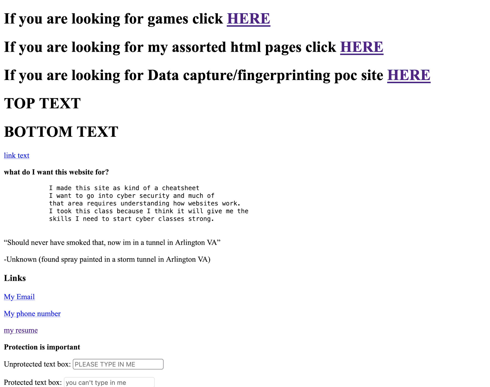

Old Personal Website
September 2025 - Present
DISCLAIMER: I did not take documentation seriously in my early projects. Please ignore older commit messages.

Main page
I used this site both as my very first web dev project, with examples of basic html elements
As well as a later launching point for my personal projects